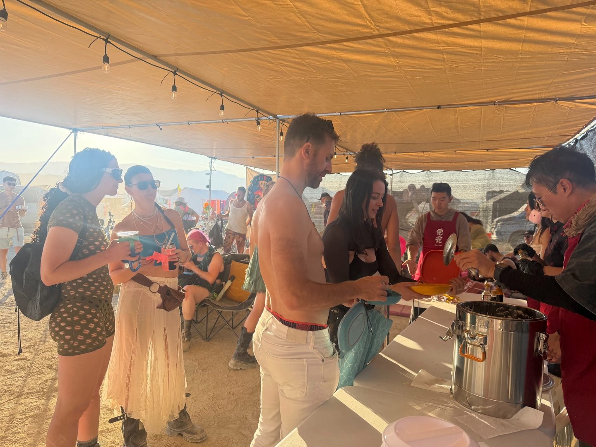
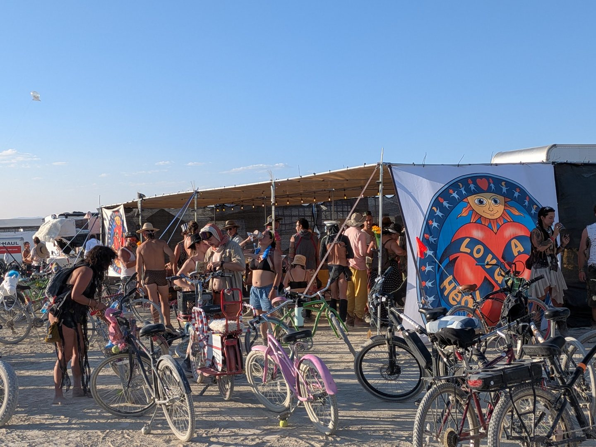
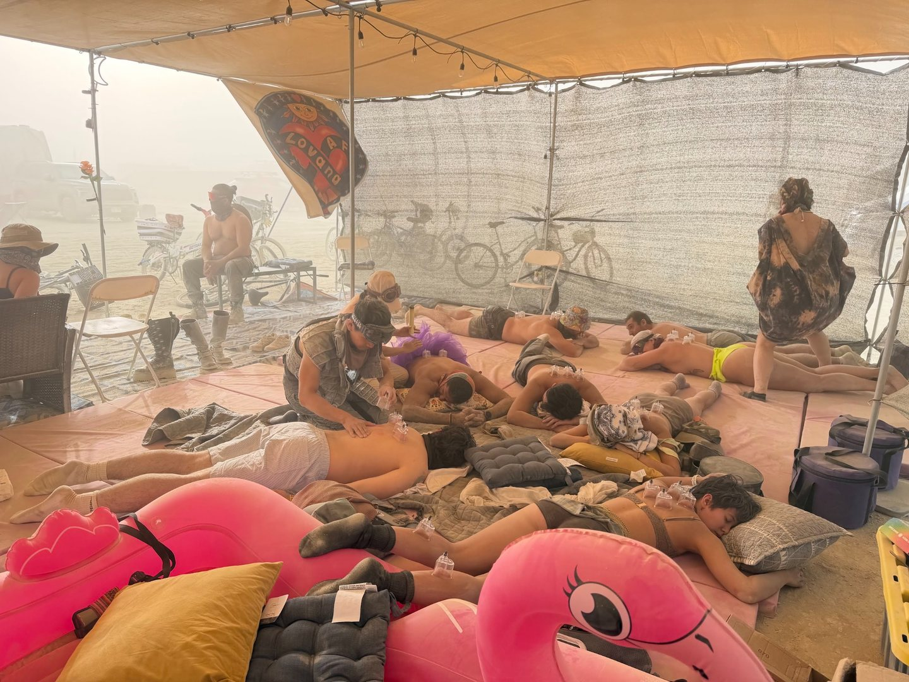
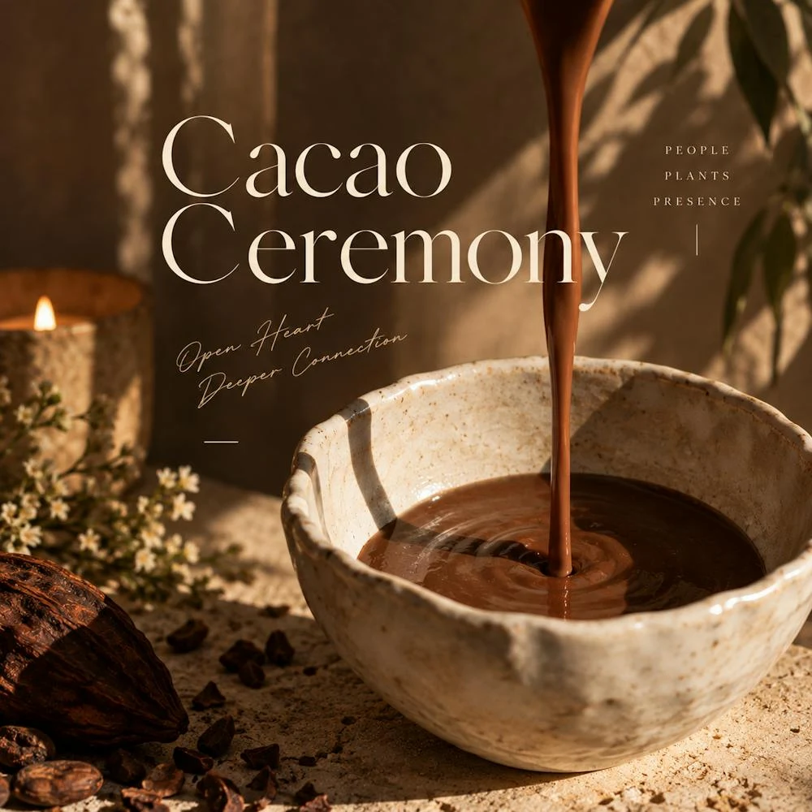
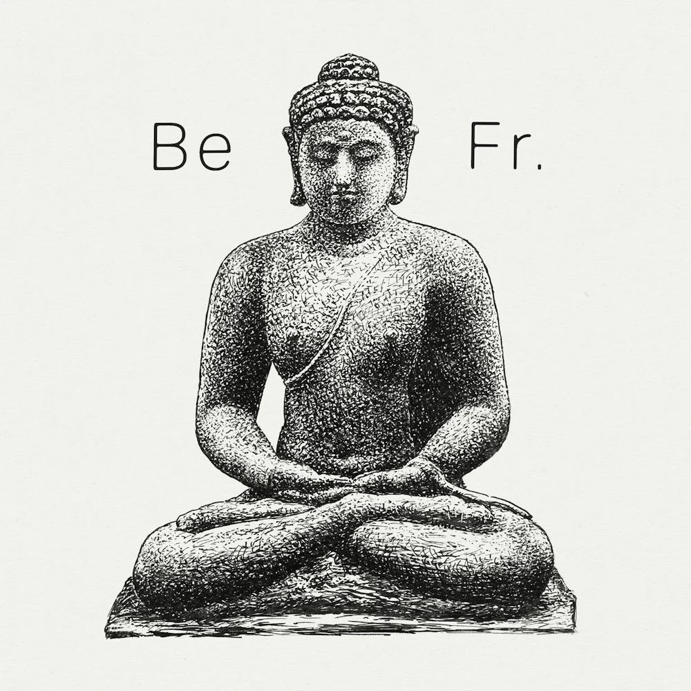
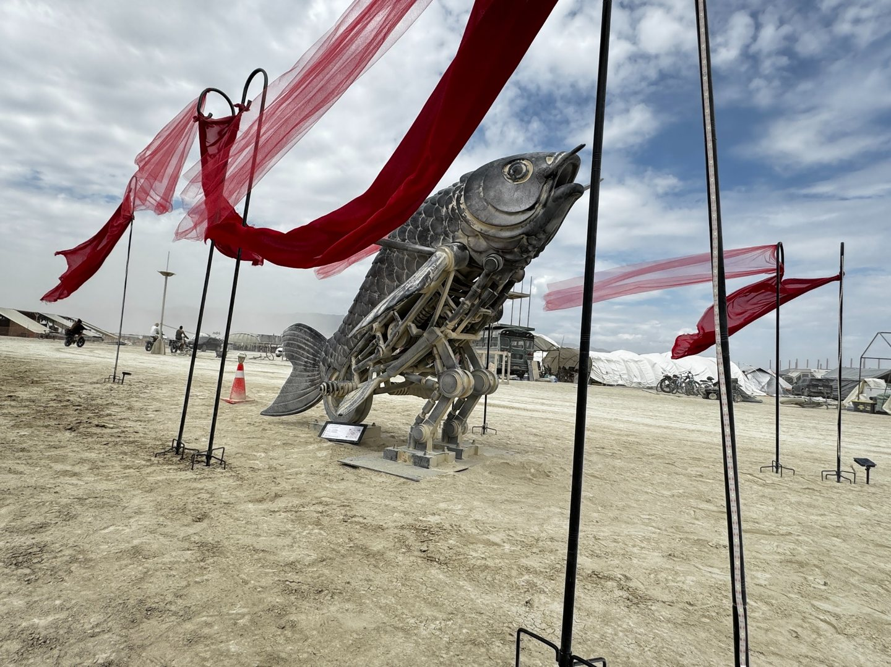
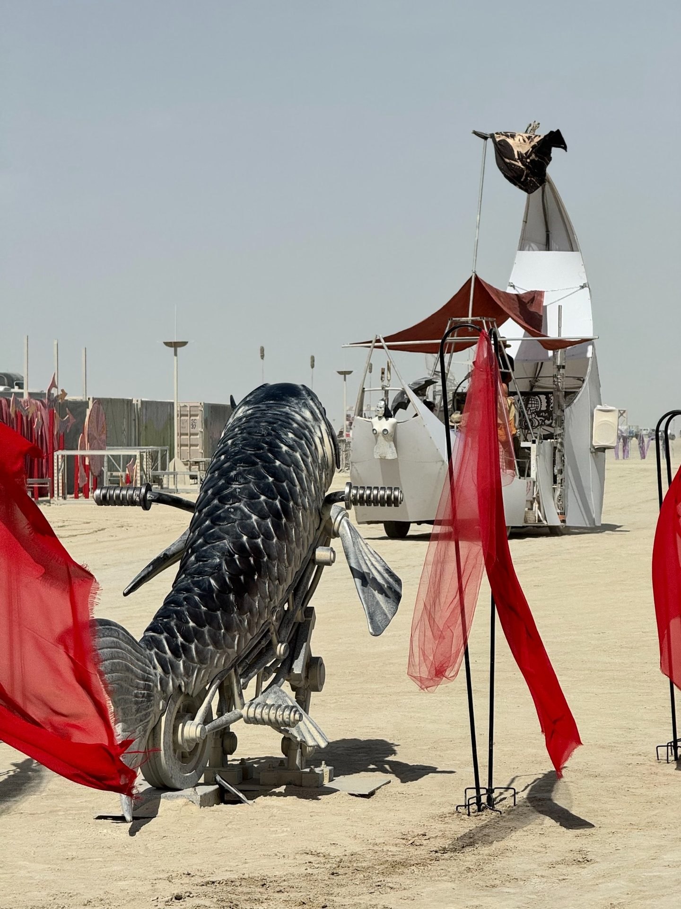
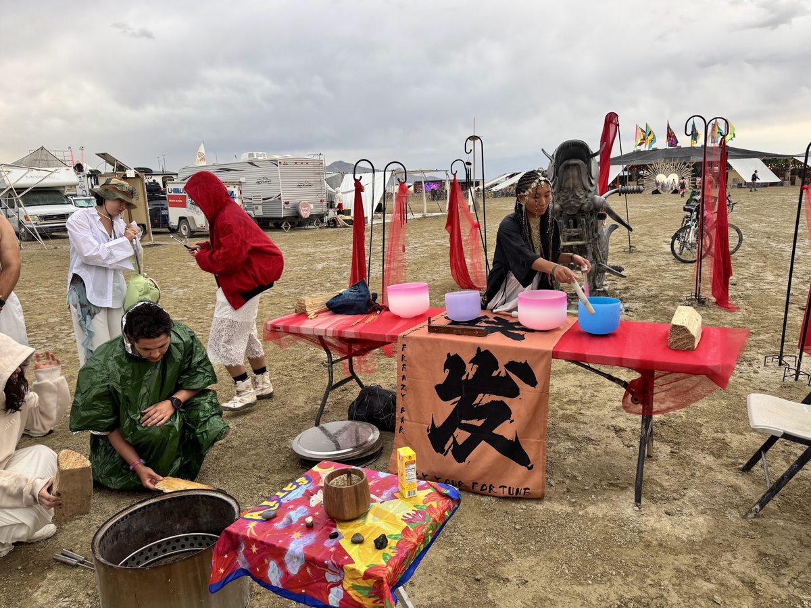
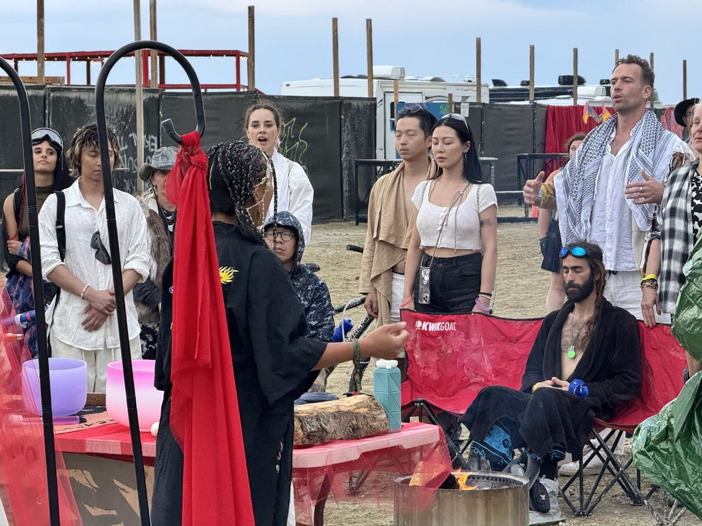
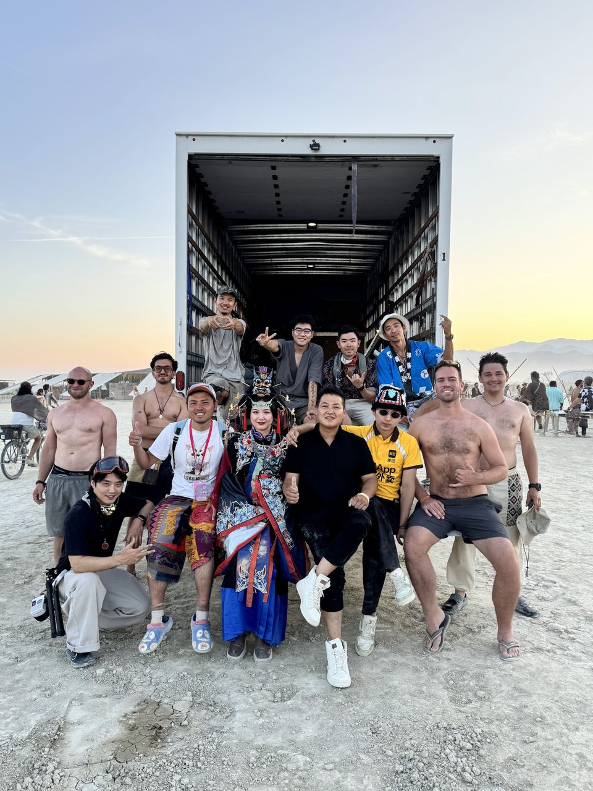

We’re planning a Lake Tahoe learning experience for children and families with low incomes, pairing beginner group snowboarding with an introduction to tea ceremony.
Learn a new skill on the snow and take part in tea ceremony teaching—a chance to explore culture and connect with others.
Two community members, including a licensed snowboard coach, are helping bring this program to life.
To express interest in signing up, email jasonwang.connect@gmail.com. Exact date and location TBD. More details to come. Email us to express interest; registration is not open yet.
Teacher-led gatherings to move, breathe, and reconnect. Our host community’s past yoga sessions are part of the story below. We’re developing more public sessions with respect for yoga’s roots in India and a welcoming approach to shared practice.
DJ-led gatherings for listening, movement, and connection. We’re exploring how music can bring people with different backgrounds into the same room and open space for cultural exchange.
Our first public gathering is being developed.
These programs are in development. Dates, venues, and ways to participate will be shared when confirmed.
02 / Community offerings
Community offerings
01
HealAF by Lovana Project
Art, gifting & desert community
HealAF is Lovana Project’s camp at Burning Man: a place for cultural sharing, community offerings, and time together. From serving freshly made savory tofu to hosting air cupping sessions, our camp invites people to stop by, take part, and connect.
This spirit of participation also shapes the public programs we’re developing beyond the desert.

Freshly made savory tofu. An offering from HealAF by Lovana Project to the Burning Man community.

A place to stop by and join in.

Air cupping and a quiet moment together.
Past community gatherings · 2026
Movement, presence & connection.
Yoga and cacao gatherings hosted by a member of the Lovana community, shared here as part of our growing program of connection and well-being.

Original event cover artwork
Past event
Drink Cacao & Connect with Friends
Cacao & connection
A gathering over warm cacao, with a short meditation, intention setting, quiet reflection, and optional sharing. The invitation made space to listen with kindness, come as you are, and close with gratitude.

Original event cover artwork
Past event
Yoga on the grass
Alta Plaza Park · San Francisco
An outdoor yoga gathering on the grass at Alta Plaza Park, inviting people to step away from their routines and enjoy a shared practice in the open air.
Original event cover artwork
Past event
Unplug & Unwind: Yoga in the Park
San Francisco · Small group gathering
A small, closed-group yoga session guided by Zoe, a certified yoga instructor. Part of the “non-ai ai” event series, it offered a break from screens and work conversations through movement, breath, presence, and connection.
A mechanical koi, red ribbons moving in the wind, and an invitation to play. The Transcendental Water was a participatory art experience at Burning Man in 2025.
It is part of the creative history our founders bring to Lovana Project: a belief that play and shared experience can help people connect.

The Transcendental Water · 2025

A closer look at the koi.

Singing bowls beside the installation.

A moment of shared attention.

The people behind The Transcendental Water.
Make something with us
Get involved
We’re growing a community of artists, makers, teachers, musicians, and people who simply want to help.